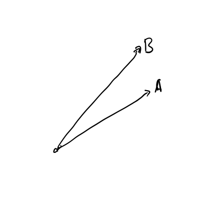
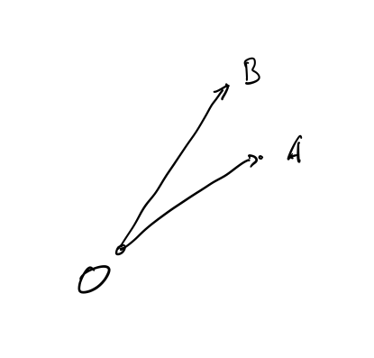
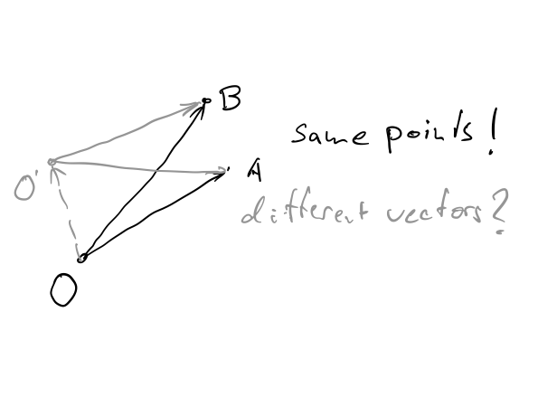
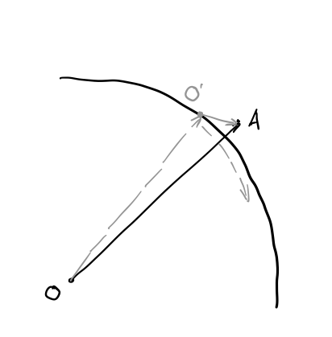

Welcome to Math for Machine Learning!
Linear Algebra, Session
7 — Loose Ends
Mesch
X/Google, 2021
Tensors, Machine Learning, and Quantum Computing
We have left some loose ends dangling.
Loose Ends — Overview
Plan for today. We very lightly touch upon some left-over topics
that give an outlook where to go from here:
- Coordinate system invarance of Scalars
- Affine spaces, another look at Arrows
- Outlook: Manifolds and differential geometry
- Tensor like data structures in software
- Where this leaves Linear Algebra in Deep Learning
Invariance of Scalars
Properties of vectors are defined independent of the coordinate
system.
- Coordinates follow from algebraic axioms of the vector
space.
- Scalar product can be computed from coordinates
of vectors and the metric tensor:
$$\xvec{x}\cdot\xvec{y} = x^i y^j g_{ij}$$
but has the same value in every basis.
- Metric properties norm and angle are
defined by scalar product.
- Also for scalar properties of operators: E.g., trace is
defined in coordinates of an operator, but also retains its value
under a coordiniate transformation $T$:
$$\mathrm{tr}(A) = A_i^i = T_i^{j^\prime} T^i_{k^\prime}
A_{j^\prime}^{k^\prime} = \delta^{j^\prime}_{k^\prime}
A_{j^\prime}^{k^\prime} = A_{j^\prime}^{j^\prime}$$
- A scalar, like a vector and a tensor, is not just a
certain set of numbers, but the numbers have a specific behavior
under coordinate transformation.
Arrows revisited: Affine Spaces and Euclidean Spaces
Vectors and their coordinates are related but not the same. Points
and the vectors that describe them aren't, either.
- We use vectors to describe points in a plane.
- But that's relative to a fixed origin point.
- What if we want to change the origin?
- E.g. working with a coordinate frame at the surface of
Earth, which rotates?
- The underlying algebraic structure is an Affine
Space.
|




|
Affine Spaces and Euclidean Spaces
What is an Affine Space?
- A set $A$, elements are called Points.
- An associated Vector Space $V$.
- An operation Point-Point=Vector that maps any pair
of points to a vector.
$$\forall A,B \in A \, \exists \xvec{v} \in V :\, B - A = \xvec{v} $$
- An operation Point+Vector=Point that moves a point
by a vector to another point.
$$\forall A \in A \, \forall \xvec{v} \in V \, \exists B \in A :\, A
+ \xvec{v} = B$$
Affine Spaces and Euclidean Spaces
Basis of an Affine Space
- A Basis in such a space is a pair of an origin point and
a basis in the vector space.
$${O, \xvec{e}_1, ... \xvec{e}_n}$$
- Coordinates of a Point $P$ in that basis are the
coordinates $p^i$ of the vector $$\xvec{p} = P - O$$
- A Basis Transformation is a pair of a transformation of
the vector basis, plus a translation of the origin point (a vector).
$$\xvec{e}_{i^\prime} = T^{i}_{i^\prime} \xvec{e}_i$$
$$O^\prime = O + \xvec{t}$$
Affine Spaces and Euclidean Spaces
Vectors are operators on the Affine Space:
- Every vector from $V$ defines an Operator on the Affine
Space $A$, a Translation.
- We have seen before that Operators on a Vector Space form
another Vector Space on their own.
- Similar here, except it's operators on a space that's not
a vector space.
- "are" above means "isomorphic".
- Recall the example
of Arrows as vectors.
Affine Spaces and Euclidean Spaces
Euclidean Space
- Remember, a Euclidean Vector Space
is one over $R$ with a Scalar Product.
- An Affine Space associated with a Euclidean Vector Space
is a Euclidean Space.
Polar Coordinates Revisited: Manifolds
Polar coordinates are not really the coordinates we have defined
from linear independence. They can be better understood as coordinates
of points.
- Consider polar coordinates in a 2D Euclidean space.
- There are directions in which only one of the coordinates changes.
- The vectors in these directions form a basis of the associated
vector space.
- But this basis is different in every point!
- Interesting question to ask: How are those bases defined in nearby
points related?
- This is the topic of Differential Geometry, aka
Riemann Geometry, aka Vector and Tensor Calculus.
- Leads to the concept of a Manifold.
Manifolds
- Manifolds are "warped" subspaces that are embedded in Affine
Spaces.
- For example, the surface of a sphere is a
manifold embedded in 3D Euclidean space. It's parametrized by two
coordinates, longitude and latitude.
- It turns out that the examples from which deep learning
models learn are drawn from a manifold in the feature space, not the
whole feature space.
- An embedding inside a model are the coordinates of such a
manifold.
- Also, during training, the ML model "mostly" traverses a
manifold in its parameter space, the "top subspace"
(reference).
Tensor like data structures in software
Some situations in software design offer a choice of cartesian and
tensor product.
- The set of files belonging to a user can be modeled as a
vector (in one-hot-encoding).
- Permissions (view, comment, edit) can be modeled
as vectors too.
- Requisite operations TBD, but cconceivably there even are
operations addition and scalar multiplication by -1, to deny a
permission to a group.
- Grant of permission: should this be the Cartesian
product of the vector of files with the vector of permissions, or
the tensor product?
- In Google Drive, sharing a file with users is such
a tensor product: each file is shared with separate permission.
- However, in Google Drive API, granting access to
an app is the cartesian product: requesting app iis granted the same
accces permission to all files (called scope) in
drive. (Arguably a poor choice.)
LA, Deep Learning, and Software Design
So where does this leave Linear Algebra in Deep Learning?
- Multidimensional arrays are an important mechanism for
massive parallel and distributed computing.
- Matrix multiplication and scalar products appear
in tensorflow computations.
- More germane concepts of Linear Algebra generalize to
Manifolds, and then are useful to better understand and
optimize DL models.
- E.g. understand training, optimization, embeddings
in terms of manifolds in feature space or parameter space.
- Impose regularization in terms of tensor product
decompositions of weight matrices.
- Understand embeddings in terms of matrix decompositions.
- Other concepts from LA may inform or inspire software
design. E.g. tensor product-like data structure composition;
reversible computing inspired by QC.